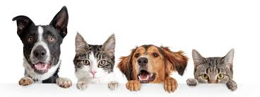

Animal welfare organizations are concerned with the health, safety and psychological wellness of individual animals. These organizations include animal rescue groups and wildlife rehabilitation centres, which care for animals in distress and sanctuaries, where animals are brought to live and be protected for the rest of their lives. Their goals are generally distinct from conservation organizations, which are primarilyconcerned with the preservation of species, populations, habitats, ecosystems and biodiversity, rather than the welfare of individual animals.
Animal Adaptations needs An adaptation is something about an animal that makes it possible for it to live in a particular place and in a particular way. It may be a physical adaptation, like the size or shape of the animal's body, or the way in which its body works. Or it may be the way the animal behaves. Each adaptation has been produced by evolution. As the environment changes, animals that cannot adapt die out, and only the adapted ones survive to produce babies. Because babies are usually more or less like their parents, the whole species soon contains only animals that are adapted to the new environment. An animal's environment consists of many different things. The climate is important. Whether it is hot, cold, dry, or wet will have an effect on all the creatures that live in a particular place. Another important part of an animal's environment is what kinds of food plants grow in it. The other animals that live there also have an effect. If there are predators around, the prey animals will have to learn to defend themselves or run fast to escape. These adaptations make it possible for a great variety of creatures to live and thrive on earth. animals adapt to the natural world. Animals in the wild can only live in places they are adapted to. They must have the right kind of habitat where they can find the food and space they need.Animal Adaptations evironment: An adaptation is something about an animal that makes it possible for it to live in a particular place and in a particular way. It may be a physical adaptation, like the size or shape of the animal's body, or the way in which its body works. Or it may be the way the animal behaves. Each adaptation has been produced by evolution. As the environment changes, animals that cannot adapt die out, and only the adapted ones survive to produce babies. Because babies are usually more or less like their parents, the whole species soon contains only animals that are adapted to the new environment. An animal's environment consists of many different things. The climate is important. Whether it is hot, cold, dry, or wet will have an effect on all the creatures that live in a particular place.Another important part of an animal's environment is what kinds of food plants grow in it. The other animals that live there also have an effect. If there are predators around, the prey animals will have to learn to defend themselves or run fast to escape. These adaptations make it possible for a great variety of creatures to live and thrive on earth. animals adapt to the natural world. Animals in the wild can only live in places they are adapted to. They must have the right kind of habitat where they can find the food and space they need.